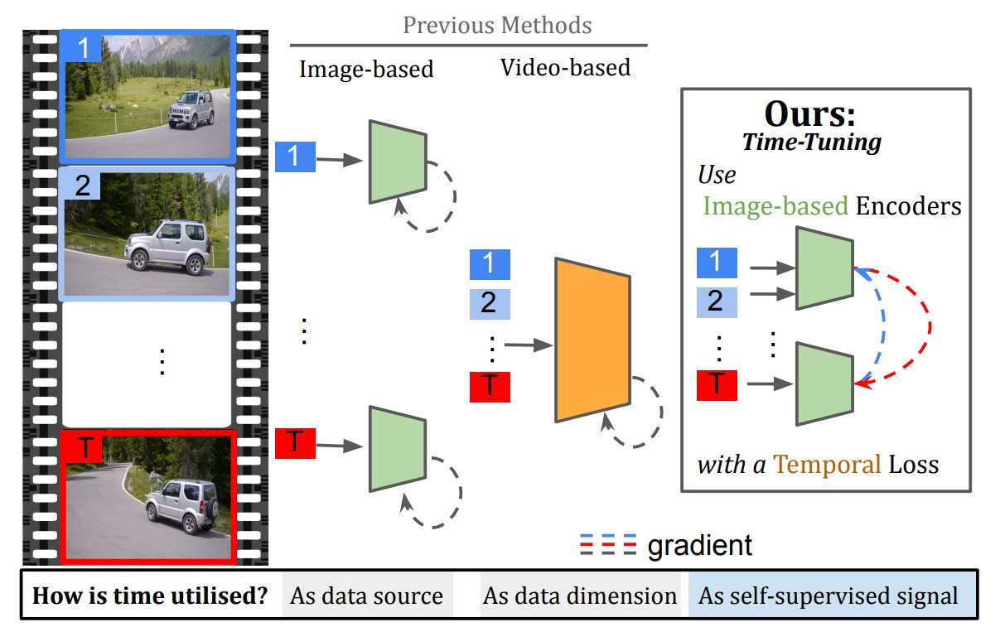
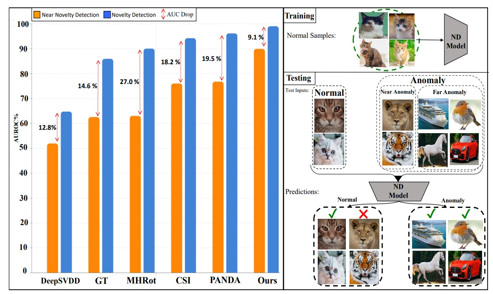
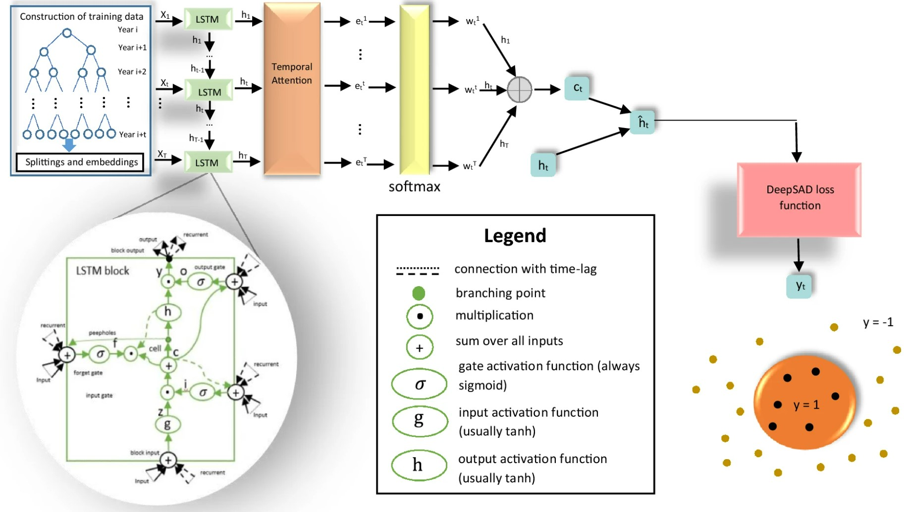
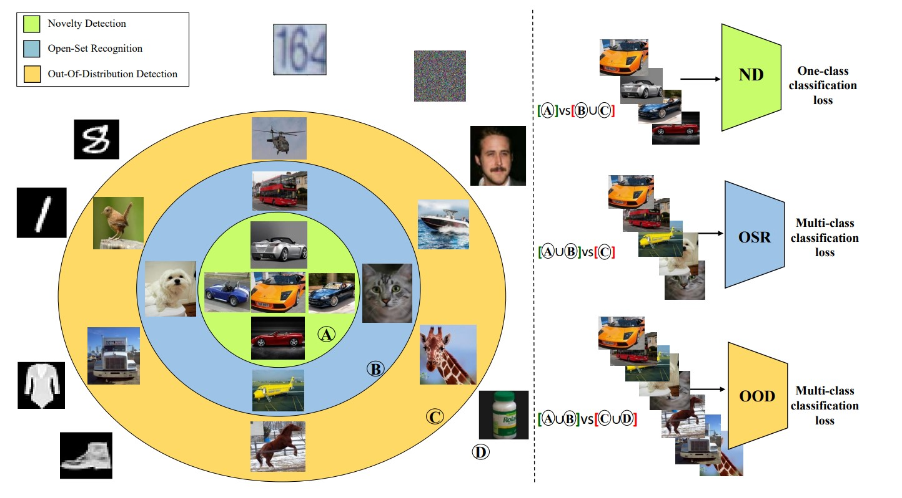

About Me
I am PhD student in the QUVA lab at the University of Amsterdam supervised by Yuki Asano and Cees Snoek. I am also part of the ELLIS PhD program in cooperation with Qualcomm. My research primarily revolves around video data, which provides a lens to the intricate dynamics and mechanisms that define our world. I am interested in self-supervised methods and vision-language models as these yield more generalizable visual representations.
Projects
Publications




Teaching
- Course 1
- Course 2
Contact
Email: s.salehidehnavi@uva.nl